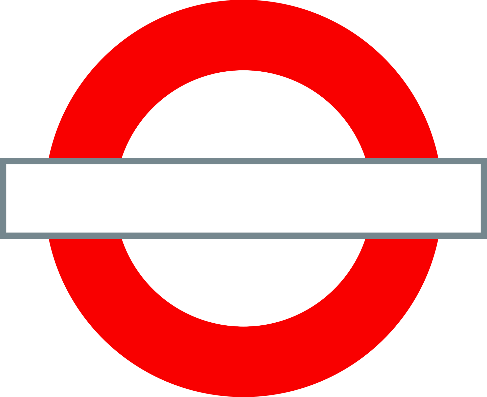

Links:
Video walkthrough
Code & documentation (github)
TFL Tube Population
This website visualizes TFL's daily tube population data from 2022.
Steps: Choose a train line, day and time (or click play for animation). Hover over bars for additional station info.
Click roundel to continue

Choose a Line:
Select
Bakerloo
Central
Circle
District
Hammersmith & City
Jubilee
Metropolitan
Northern
Piccadilly
Victoria
Waterloo & City
play
stop
Choose Time (optional):
Day:
Select
Monday
Tuesday/Wednesday/Thursday
Friday
Saturday
Sunday
Time:
Select
5:00 - 7:00
7:00 - 10:00 (peak)
10:00 - 16:00
16:00 - 19:00 (peak)
19:00 - 22:00
22:00 - 5:00